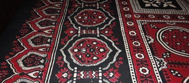

Stamp a wooden block in resist paste, dye in indigo and madder red, and wash to reveal the dense geometric border-and-centre pattern.
Heritage note
Part of the living heritage of Pakistan. Some forms of this practice carry deep meaning for the communities who keep it; here we describe the play and the craft only, with respect for its roots.
Origins
A living tradition passed from person to person; it is not tied to a single dated origin. It belongs to the cultural world of South Asia.
Sources
Related entries

Pakistani truck art
Pakistan +1 · Crafts and makingPlay preview · in the Paper & Paint of the World app
Lippan kaam mud-and-mirror relief
India +1 · Crafts and makingPlay preview · in the Paper & Paint of the World app
Mehndi henna pattern drawing
India +1 · Crafts and makingPlay preview · in the Paper & Paint of the World app


More from Pakistan


Kushti / Pehlwani mud wrestling
India +1 · Wrestling and martial sportsPlay preview · in the Sports & Skill of the World app
Phulkari darn-stitch embroidery
India +1 · Crafts and makingPlay preview · in the Textile Crafts of the World app